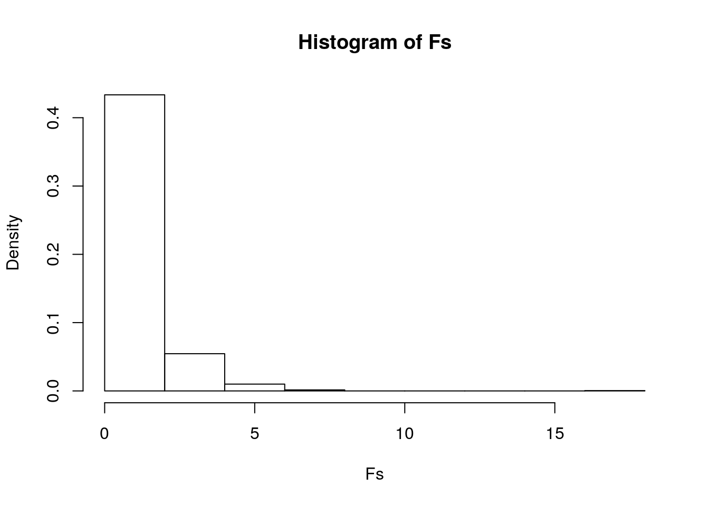
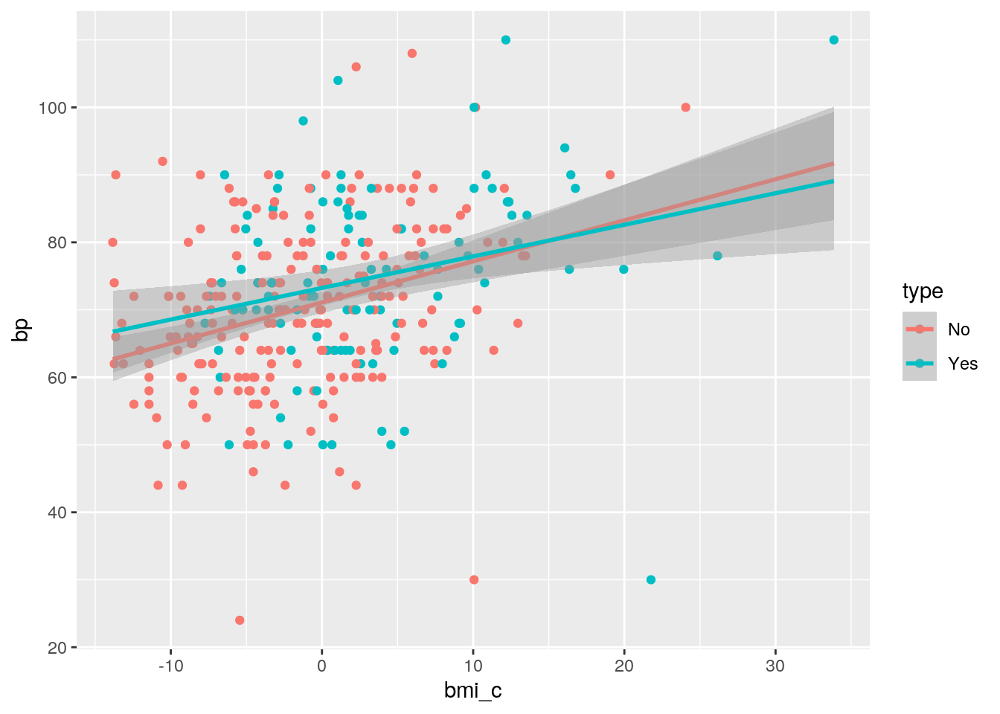
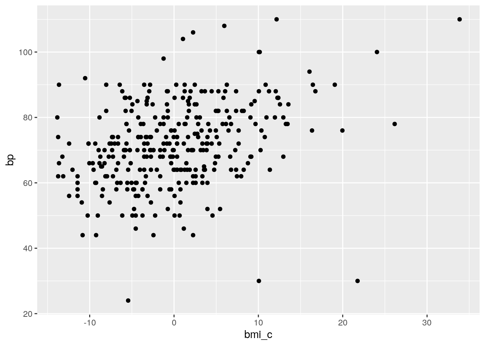
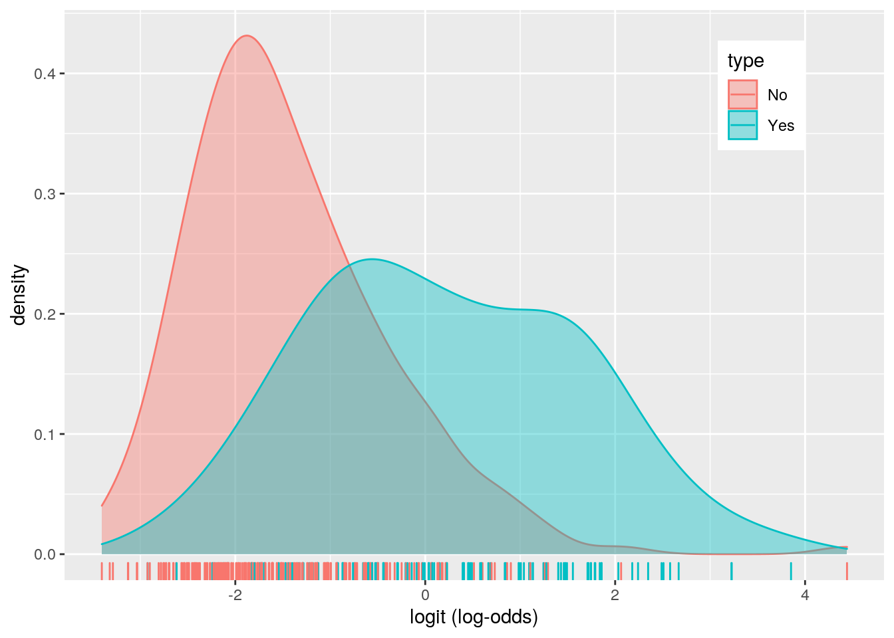
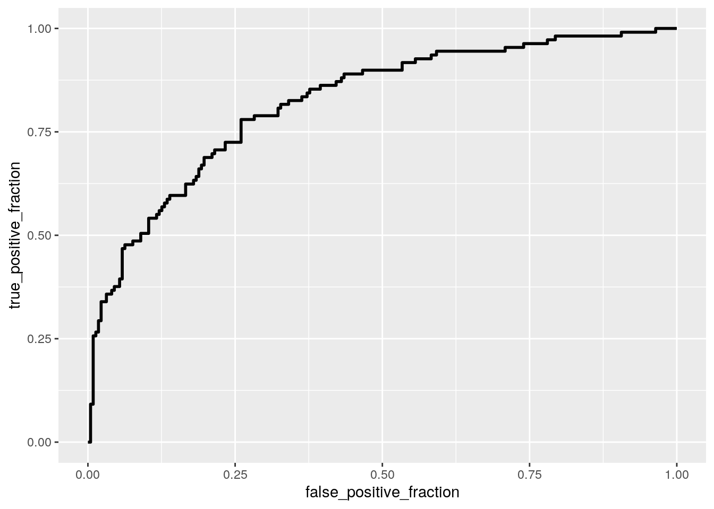

The dataset I chose was Pima. This dataset consists of diebetes diagnosis of women (at least 21 years old) of Pima Indian heritage and their medical record data. The Pima dataset contains 8 variables: npreg (number of pregnancies), glu (plasma glucose concentration in an oral glucose tolerance test), bp (diastolic blood pressure in mmHg), skin (triceps skin fold thickness in mm), bmi (body mass index), ped (diabetes pedigree function), age (age in years), and type (Yes for diabetic and No for not diabetic). There are 332 observations in this dataset.
library(dplyr)
library(tidyverse)
library(rstatix)
library(sandwich)
library(lmtest)
Pima <- read_csv("Pima.csv") %>% select(-X1)man1 <- manova(cbind(npreg, glu, bp, skin, bmi, ped, age) ~ type,
data = Pima)
summary(man1)## Df Pillai approx F num Df den Df Pr(>F)
## type 1 0.35694 25.692 7 324 < 2.2e-16 ***
## Residuals 330
## ---
## Signif. codes: 0 '***' 0.001 '**' 0.01 '*' 0.05 '.' 0.1 ' ' 1summary.aov(man1)## Response npreg :
## Df Sum Sq Mean Sq F value Pr(>F)
## type 1 207.1 207.117 20.331 9.062e-06 ***
## Residuals 330 3361.8 10.187
## ---
## Signif. codes: 0 '***' 0.001 '**' 0.01 '*' 0.05 '.' 0.1 ' ' 1
##
## Response glu :
## Df Sum Sq Mean Sq F value Pr(>F)
## type 1 83247 83247 122.26 < 2.2e-16 ***
## Residuals 330 224689 681
## ---
## Signif. codes: 0 '***' 0.001 '**' 0.01 '*' 0.05 '.' 0.1 ' ' 1
##
## Response bp :
## Df Sum Sq Mean Sq F value Pr(>F)
## type 1 1577 1576.67 9.8826 0.00182 **
## Residuals 330 52648 159.54
## ---
## Signif. codes: 0 '***' 0.001 '**' 0.01 '*' 0.05 '.' 0.1 ' ' 1
##
## Response skin :
## Df Sum Sq Mean Sq F value Pr(>F)
## type 1 2254.4 2254.44 25.479 7.405e-07 ***
## Residuals 330 29198.8 88.48
## ---
## Signif. codes: 0 '***' 0.001 '**' 0.01 '*' 0.05 '.' 0.1 ' ' 1
##
## Response bmi :
## Df Sum Sq Mean Sq F value Pr(>F)
## type 1 1738.5 1738.50 36.269 4.582e-09 ***
## Residuals 330 15818.0 47.93
## ---
## Signif. codes: 0 '***' 0.001 '**' 0.01 '*' 0.05 '.' 0.1 ' ' 1
##
## Response ped :
## Df Sum Sq Mean Sq F value Pr(>F)
## type 1 2.767 2.76680 22.315 3.428e-06 ***
## Residuals 330 40.916 0.12399
## ---
## Signif. codes: 0 '***' 0.001 '**' 0.01 '*' 0.05 '.' 0.1 ' ' 1
##
## Response age :
## Df Sum Sq Mean Sq F value Pr(>F)
## type 1 2998 2998.31 28.723 1.571e-07 ***
## Residuals 330 34447 104.39
## ---
## Signif. codes: 0 '***' 0.001 '**' 0.01 '*' 0.05 '.' 0.1 ' ' 1pairwise.t.test(Pima$npreg, Pima$type, p.adj = "none")##
## Pairwise comparisons using t tests with pooled SD
##
## data: Pima$npreg and Pima$type
##
## No
## Yes 9.1e-06
##
## P value adjustment method: nonepairwise.t.test(Pima$glu, Pima$type, p.adj = "none")##
## Pairwise comparisons using t tests with pooled SD
##
## data: Pima$glu and Pima$type
##
## No
## Yes <2e-16
##
## P value adjustment method: nonepairwise.t.test(Pima$bp, Pima$type, p.adj = "none")##
## Pairwise comparisons using t tests with pooled SD
##
## data: Pima$bp and Pima$type
##
## No
## Yes 0.0018
##
## P value adjustment method: nonepairwise.t.test(Pima$skin, Pima$type, p.adj = "none")##
## Pairwise comparisons using t tests with pooled SD
##
## data: Pima$skin and Pima$type
##
## No
## Yes 7.4e-07
##
## P value adjustment method: nonepairwise.t.test(Pima$bmi, Pima$type, p.adj = "none")##
## Pairwise comparisons using t tests with pooled SD
##
## data: Pima$bmi and Pima$type
##
## No
## Yes 4.6e-09
##
## P value adjustment method: nonepairwise.t.test(Pima$ped, Pima$type, p.adj = "none")##
## Pairwise comparisons using t tests with pooled SD
##
## data: Pima$ped and Pima$type
##
## No
## Yes 3.4e-06
##
## P value adjustment method: nonepairwise.t.test(Pima$age, Pima$type, p.adj = "none")##
## Pairwise comparisons using t tests with pooled SD
##
## data: Pima$age and Pima$type
##
## No
## Yes 1.6e-07
##
## P value adjustment method: none1 - 0.95^15## [1] 0.53670880.05/15## [1] 0.003333333group <- Pima$type
DVs <- Pima %>% select(npreg, glu, bp, skin, bmi, ped, age)
# Test multivariate normality for each group (null:
# assumption met)
sapply(split(DVs, group), mshapiro_test)## No Yes
## statistic 0.8633618 0.9091005
## p.value 3.136631e-13 1.634575e-06# If any p<.05, stop. If not, test homogeneity of covariance
# matrices
# Box's M test (null: assumption met)
box_m(DVs, group)## # A tibble: 1 x 4
## statistic p.value parameter method
## <dbl> <dbl> <dbl> <chr>
## 1 97.0 0.00000000157 28 Box's M-test for Homogeneity of Covariance …# View covariance matrices for each group
lapply(split(DVs, group), cov)## $No
## npreg glu bp skin bmi ped
## npreg 7.73869834 1.039753 5.7385165 4.12663112 0.03107502 0.05654268
## glu 1.03975276 512.838242 42.7231447 44.37245990 30.43163859 1.44905076
## bp 5.73851654 42.723145 153.3118410 25.74827294 26.88442613 -0.17612786
## skin 4.12663112 44.372460 25.7482729 91.54098493 41.06246314 0.04200927
## bmi 0.03107502 30.431639 26.8844261 41.06246314 44.19610269 0.05526609
## ped 0.05654268 1.449051 -0.1761279 0.04200927 0.05526609 0.09932414
## age 19.25778693 33.567386 35.2601705 16.94883448 3.00218155 0.42116162
## age
## npreg 19.2577869
## glu 33.5673858
## bp 35.2601705
## skin 16.9488345
## bmi 3.0021816
## ped 0.4211616
## age 102.6471539
##
## $Yes
## npreg glu bp skin bmi ped
## npreg 15.2205233 -11.276419 6.0311757 -6.4502209 -6.785746 -0.0618476
## glu -11.2764186 1026.287802 39.0343187 -3.7601937 12.702115 0.5651170
## bp 6.0311757 39.034319 172.3450561 7.9282195 26.026121 0.1955656
## skin -6.4502209 -3.760194 7.9282195 82.1914713 40.551427 0.6682459
## bmi -6.7857458 12.702115 26.0261213 40.5514271 55.615019 0.2717190
## ped -0.0618476 0.565117 0.1955656 0.6682459 0.271719 0.1746813
## age 24.5538566 17.936544 42.9385831 -28.8576283 -16.074635 0.1029209
## age
## npreg 24.5538566
## glu 17.9365443
## bp 42.9385831
## skin -28.8576283
## bmi -16.0746347
## ped 0.1029209
## age 107.9612640The p-value is less than 0.05, so at least one of the seven response variables differ by the diabetic status. All of the variables show a mean difference by the diabetic status. The diabetic group is different from the non-diabetic group. I have performed 15 tests. The probability that I have made at least one type I error is 0.537. The significance level I should use if I want to keep the overall type I error rate at .05 is 0.003. Every response variable is still significant. MANOVA assumptions: 1. Random samples, independent observations: this is likely to be met because the data was collected by the US National Institute of Diabetes and Digestive and Kidney Diseases. 2. Multivariate normality of DVs: this is not met. 3. Homogeneity of within-group covariance matrices: it is not met in this dataset. 4. Linear relationships among DVs: it is likely to be met. 5. No extreme univariate or multivariate outliers: it is likely be met in this dataset. 6. No multicollinearity: it is likely to be met.
library(vegan)
dists <- Pima %>% select(-type) %>% dist()
adonis(dists ~ type, data = Pima)##
## Call:
## adonis(formula = dists ~ type, data = Pima)
##
## Permutation: free
## Number of permutations: 999
##
## Terms added sequentially (first to last)
##
## Df SumsOfSqs MeanSqs F.Model R2 Pr(>F)
## type 1 92024 92024 84.308 0.20349 0.001 ***
## Residuals 330 360205 1092 0.79651
## Total 331 452229 1.00000
## ---
## Signif. codes: 0 '***' 0.001 '**' 0.01 '*' 0.05 '.' 0.1 ' ' 1SST <- sum(dists^2)/332
SSW <- Pima %>% group_by(type) %>% select(npreg, glu, bp, skin,
bmi, ped, age) %>% do(d = dist(.[-1], "euclidean")) %>% ungroup() %>%
summarize(sum(d[[1]]^2)/223 + sum(d[[2]]^2)/109) %>% pull
F_obs <- ((SST - SSW)/1)/(SSW/330)
Fs <- replicate(1000, {
new <- Pima %>% mutate(type = sample(type)) #permute the species vector
SSW <- new %>% group_by(type) %>% select(npreg, glu, bp,
skin, bmi, ped, age) %>% do(d = dist(.[-1], "euclidean")) %>%
ungroup() %>% summarize(sum(d[[1]]^2)/223 + sum(d[[2]]^2)/109) %>%
pull
((SST - SSW)/1)/(SSW/330) #calculate new F ratio on randomized data
})
{
hist(Fs, prob = T)
abline(v = F_obs, col = "red", add = T)
}
mean(Fs > F_obs)## [1] 0Null hypothesis: For each response variable, the means of diabetic group and non-diabetic group are equal. Alternative hypothesis: For at least 1 response variable, at least 1 group mean differs. I reject the null hypothesis (p < 0.05).
Pima$bmi_c <- Pima$bmi - mean(Pima$bmi)
fit <- lm(bp ~ bmi_c * type, data = Pima)
summary(fit)##
## Call:
## lm(formula = bp ~ bmi_c * type, data = Pima)
##
## Residuals:
## Min 1Q Median 3Q Max
## -53.422 -7.608 0.257 7.142 33.522
##
## Coefficients:
## Estimate Std. Error t value Pr(>|t|)
## (Intercept) 71.1032 0.8307 85.591 < 2e-16 ***
## bmi_c 0.6083 0.1217 4.996 9.52e-07 ***
## typeYes 2.1357 1.5112 1.413 0.159
## bmi_c:typeYes -0.1403 0.1976 -0.710 0.478
## ---
## Signif. codes: 0 '***' 0.001 '**' 0.01 '*' 0.05 '.' 0.1 ' ' 1
##
## Residual standard error: 12.06 on 328 degrees of freedom
## Multiple R-squared: 0.1203, Adjusted R-squared: 0.1122
## F-statistic: 14.95 on 3 and 328 DF, p-value: 3.821e-09Pima %>% ggplot(aes(bmi_c, bp, color = type)) + geom_point() +
geom_smooth(method = "lm", fullrange = TRUE)
resids <- fit$residuals
Pima %>% ggplot() + geom_point(aes(bmi_c, bp))
shapiro.test(resids)##
## Shapiro-Wilk normality test
##
## data: resids
## W = 0.97928, p-value = 0.0001018bptest(fit)##
## studentized Breusch-Pagan test
##
## data: fit
## BP = 7.7065, df = 3, p-value = 0.05248coeftest(fit, vcov = vcovHC(fit))##
## t test of coefficients:
##
## Estimate Std. Error t value Pr(>|t|)
## (Intercept) 71.10323 0.83161 85.5008 < 2.2e-16 ***
## bmi_c 0.60830 0.12613 4.8228 2.171e-06 ***
## typeYes 2.13571 1.47931 1.4437 0.1498
## bmi_c:typeYes -0.14033 0.27784 -0.5051 0.6138
## ---
## Signif. codes: 0 '***' 0.001 '**' 0.01 '*' 0.05 '.' 0.1 ' ' 171.1032 mmHg is mean bp for non-diabetics with zero bmi. Non-diabetics show an increase of 0.6083 mmHg in bp for every 1-unit increase in bmi on average. For people with average bmi, diabetics have average bp that is 2.1357 greater than non-diabetics. The slope for bmi on bp is 0.1403 lower for diabetics compared to non-diabetics. Linearity is met; normality is not met; homoskedasticity is met. Only bmi has a significant effect on bp. 12.03% of the variation in the bp is explained by my model.
Rerun same regression model (with the interaction), but this time compute bootstrapped standard errors (either by resampling observations or residuals). Discuss any changes you observe in SEs and p-values using these SEs compared to the original SEs and the robust SEs)
samp_distn <- replicate(5000, {
boot_dat <- sample_frac(Pima, replace = T)
fit <- lm(bp ~ bmi_c * type, data = boot_dat)
coef(fit)
})
samp_distn %>% t %>% as.data.frame %>% summarize_all(sd)## (Intercept) bmi_c typeYes bmi_c:typeYes
## 1 0.8193685 0.1276742 1.475877 0.2596275All the SEs are similar. The original SEs are generally the lowest, and the robust SEs are generally the highest.
Fit a logistic regression model predicting a binary variable (if you don’t have one, make/get one) from at least two explanatory variables (interaction not necessary).
Interpret coefficient estimates in context (10) Report a confusion matrix for your logistic regression (2) Compute and discuss the Accuracy, Sensitivity (TPR), Specificity (TNR), Precision (PPV), and AUC of your model (5) Using ggplot, make a density plot of the log-odds (logit) colored/grouped by your binary outcome variable (3) Generate an ROC curve (plot) and calculate AUC (either manually or with a package); interpret (5)
Pima1 <- Pima %>% mutate(y = ifelse(type == "Yes", 1, 0)) %>%
select(npreg, glu, bp, skin, bmi, ped, age, y)
fit <- glm(y ~ ped + glu, data = Pima1, family = "binomial")
summary(fit)##
## Call:
## glm(formula = y ~ ped + glu, family = "binomial", data = Pima1)
##
## Deviance Residuals:
## Min 1Q Median 3Q Max
## -2.9844 -0.7009 -0.4712 0.6572 2.4392
##
## Coefficients:
## Estimate Std. Error z value Pr(>|z|)
## (Intercept) -6.419952 0.711731 -9.020 < 2e-16 ***
## ped 1.191048 0.417864 2.850 0.00437 **
## glu 0.041054 0.005265 7.798 6.28e-15 ***
## ---
## Signif. codes: 0 '***' 0.001 '**' 0.01 '*' 0.05 '.' 0.1 ' ' 1
##
## (Dispersion parameter for binomial family taken to be 1)
##
## Null deviance: 420.30 on 331 degrees of freedom
## Residual deviance: 317.52 on 329 degrees of freedom
## AIC: 323.52
##
## Number of Fisher Scoring iterations: 4exp(coef(fit))## (Intercept) ped glu
## 0.001628735 3.290529095 1.041908516prob <- predict(fit, type = "response")
table(predict = as.numeric(prob > 0.5), truth = Pima1$y) %>%
addmargins## truth
## predict 0 1 Sum
## 0 200 52 252
## 1 23 57 80
## Sum 223 109 332class_diag <- function(probs, truth) {
tab <- table(factor(probs > 0.5, levels = c("FALSE", "TRUE")),
truth)
acc = sum(diag(tab))/sum(tab)
sens = tab[2, 2]/colSums(tab)[2]
spec = tab[1, 1]/colSums(tab)[1]
ppv = tab[2, 2]/rowSums(tab)[2]
f1 = 2 * (sens * ppv)/(sens + ppv)
if (is.numeric(truth) == FALSE & is.logical(truth) == FALSE) {
truth <- as.numeric(truth) - 1
}
# CALCULATE EXACT AUC
ord <- order(probs, decreasing = TRUE)
probs <- probs[ord]
truth <- truth[ord]
TPR = cumsum(truth)/max(1, sum(truth))
FPR = cumsum(!truth)/max(1, sum(!truth))
dup <- c(probs[-1] >= probs[-length(probs)], FALSE)
TPR <- c(0, TPR[!dup], 1)
FPR <- c(0, FPR[!dup], 1)
n <- length(TPR)
auc <- sum(((TPR[-1] + TPR[-n])/2) * (FPR[-1] - FPR[-n]))
data.frame(acc, sens, spec, ppv, f1, auc)
}
class_diag(prob, Pima1$y)## acc sens spec ppv f1 auc
## 1 0.7740964 0.5229358 0.896861 0.7125 0.6031746 0.8217386Pima$logit <- predict(fit, type = "link")
Pima %>% ggplot() + geom_density(aes(logit, color = type, fill = type),
alpha = 0.4) + theme(legend.position = c(0.85, 0.85)) + xlab("logit (log-odds)") +
geom_rug(aes(logit, color = type))
library(plotROC)
Pima <- Pima %>% mutate(prob = predict(fit, type = "response"))
ROCplot <- ggplot(Pima) + geom_roc(aes(d = type, m = prob), n.cuts = 0)
ROCplot
calc_auc(ROCplot)## PANEL group AUC
## 1 1 -1 0.8217386Odds of getting diabetes for women with zero pedifree function and zero glucose concentration is 0.0016. Controlling for glu, the odds of getting diabetes multiplies 3.291 for 1 unit increase in diabetes pedigree function. Controlling for ped, the odds of getting diabetes multiplies 1.042 for 1 unit increase in glu. The Accuracy is 0.774; the TPR is 0.523 (not good); the TNR is 0.897 (good); the PPV is 0.713; the AUC is 0.822 (good). AUC is the probability that a randomly selected person with diabetes has a higher predicted probability than a randomly selected person without diabetes, which is 0.822.
Pima <- read_csv("Pima.csv") %>% select(-X1)
Pima <- Pima %>% mutate(y = ifelse(type == "Yes", 1, 0)) %>%
select(-type)
fit <- glm(y ~ npreg + bp + skin + bmi + age + ped + glu, data = Pima,
family = "binomial")
summary(fit)##
## Call:
## glm(formula = y ~ npreg + bp + skin + bmi + age + ped + glu,
## family = "binomial", data = Pima)
##
## Deviance Residuals:
## Min 1Q Median 3Q Max
## -2.9647 -0.6582 -0.3608 0.6158 2.4646
##
## Coefficients:
## Estimate Std. Error z value Pr(>|z|)
## (Intercept) -9.514019 1.229278 -7.740 9.98e-15 ***
## npreg 0.140944 0.059652 2.363 0.01814 *
## bp -0.008675 0.012589 -0.689 0.49076
## skin 0.013167 0.020025 0.658 0.51084
## bmi 0.078951 0.028432 2.777 0.00549 **
## age 0.018055 0.018359 0.983 0.32537
## ped 1.110131 0.446921 2.484 0.01299 *
## glu 0.037481 0.005558 6.743 1.55e-11 ***
## ---
## Signif. codes: 0 '***' 0.001 '**' 0.01 '*' 0.05 '.' 0.1 ' ' 1
##
## (Dispersion parameter for binomial family taken to be 1)
##
## Null deviance: 420.30 on 331 degrees of freedom
## Residual deviance: 285.79 on 324 degrees of freedom
## AIC: 301.79
##
## Number of Fisher Scoring iterations: 5prob <- predict(fit, type = "response")
class_diag(prob, Pima$y)## acc sens spec ppv f1 auc
## 1 0.7951807 0.5779817 0.9013453 0.7411765 0.6494845 0.8685564k = 10
data1 <- Pima[sample(nrow(Pima)), ]
folds <- cut(seq(1:nrow(Pima)), breaks = k, labels = F)
diags <- NULL
for (i in 1:k) {
train <- data1[folds != i, ]
test <- data1[folds == i, ]
truth <- test$y
fit <- glm(y ~ npreg + bp + skin + bmi + age + ped + glu,
data = train, family = "binomial")
probs <- predict(fit, newdata = test, type = "response")
diags <- rbind(diags, class_diag(probs, truth))
}
summarize_all(diags, mean)## acc sens spec ppv f1 auc
## 1 0.783066 0.5435348 0.8956894 0.704899 0.6072015 0.849768library(glmnet)
Pima_resp <- as.matrix(Pima$y)
Pima_preds <- model.matrix(y ~ npreg + bp + skin + bmi + age +
ped + glu, data = Pima)[, -1]
cv <- cv.glmnet(Pima_preds, Pima_resp, family = "binomial")
lasso_fit <- glmnet(Pima_preds, Pima_resp, family = "binomial",
lambda = cv$lambda.1se)
coef(lasso_fit)## 8 x 1 sparse Matrix of class "dgCMatrix"
## s0
## (Intercept) -5.584739019
## npreg 0.051399234
## bp .
## skin .
## bmi 0.033116604
## age 0.006610991
## ped 0.191750438
## glu 0.026513151data1 <- Pima[sample(nrow(Pima)), ]
folds <- cut(seq(1:nrow(Pima)), breaks = k, labels = F)
diags <- NULL
for (i in 1:k) {
train <- data1[folds != i, ]
test <- data1[folds == i, ]
truth <- test$y
fit <- glm(y ~ npreg + bmi + age + ped + glu, data = train,
family = "binomial")
probs <- predict(fit, newdata = test, type = "response")
diags <- rbind(diags, class_diag(probs, truth))
}
summarize_all(diags, mean)## acc sens spec ppv f1 auc
## 1 0.7801248 0.5473327 0.8861207 0.7090132 0.6123431 0.8543019The Accuracy is 0.795; the TPR is 0.578 (not good); the TNR is 0.901 (good); the PPV is 0.741; the AUC is 0.869 (good). AUC is the probability that a randomly selected person with diabetes has a higher predicted probability than a randomly selected person without diabetes, which is pretty good. The AUC for the 10-fold CV is slightly lower than the in-sample AUC. npreg, bmi, age, ped, and glu are retained. The AUC for the new model is better than the AUC for the previous model.